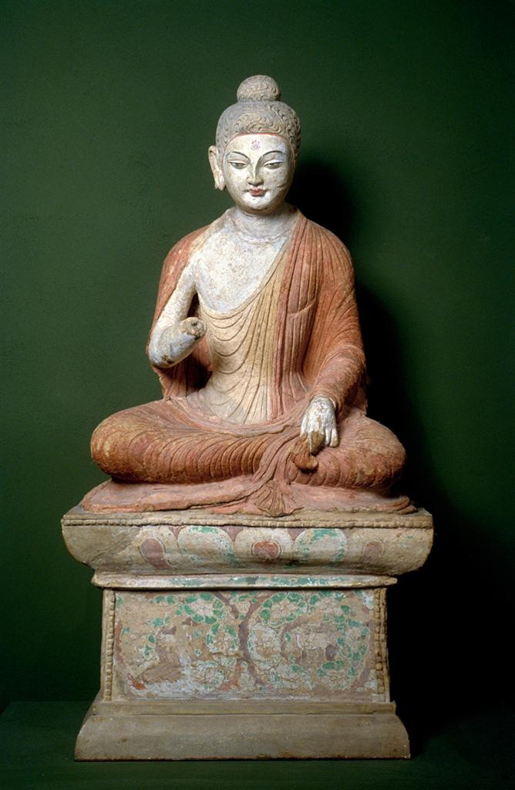

|  7th-8th cent.. Seated Buddha. clay sculpture. Place: Museum für Indische Kunst, Berlin, acc. no. MIK III 7841. http://library.artstor.org/asset/AAPDIG_10312354306. |
Clay Sculpture 7th - 8th century 102 cm Museum für Indische Kunst, Berlin |
This seated Buddha is seated on a rectangular platform on a rectangular pedestal. Made of clay, the sculpture somehow maintains quite a lot of original color. His robe is a shade of burnt sienna, and is draped in a tight-fitting fashion over his seated body. The pedestal Buddha is sitting on is also quite decorative. Some of the paint has faded, but some details still remain. It depicts a floral scene, with white flowers and green leaves. Brown stems peep out from behind the flowers and a bird-looking brown figure is located on the lower left hand corner of the front. Buddha’s eyes are narrow and his demeanor, with his pursed lips, seems serious. He is also missing his left ear, presumably lost with time.He looks to be wearing a headdress that his flowing lines carved in it. There is a small round red mark on Buddha’s forehead. The draped robe does not cover all of Buddha’s torso, and his upper right chest is exposed. His arm comes out from underneath and is outstretched. Unfortunately, we can only guess his right hand’s position, as it is broken off. With this sculpture, it is particularly notable just how much the design deviates from other statues of Buddha within the same time period. The statue is said to be of Central Asian origins, which is evident by the peculiar geometric floral designs on the pedestal, as well as the foreign facial features. Every line of this Buddha is sharp and crisp, a clear departure from the soft curves which commonly accompany the smiling Buddhas more typical then. This indicates the local presence of Buddhism had transitioned somewhat, due to foreign influences diffusing into China. Puri, Baij Nath. Buddhism in central Asia. Delhi: Motilal Banarsidass, 1993. |
|---|